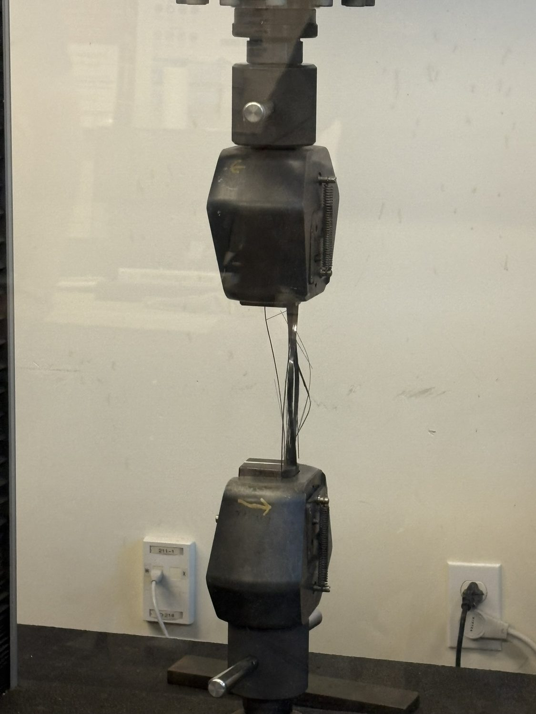
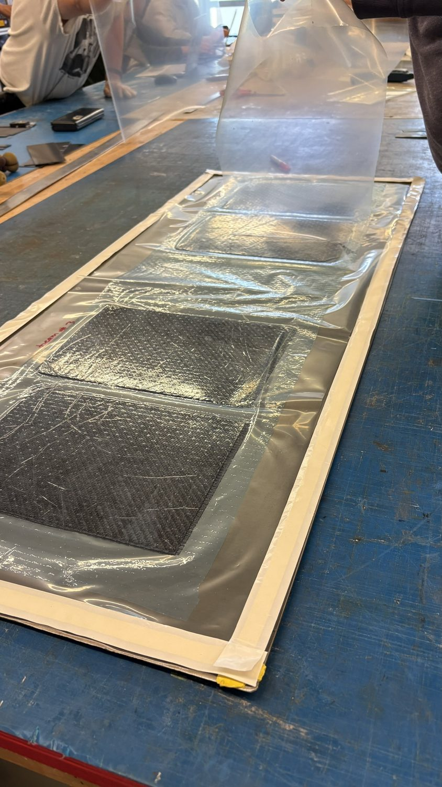
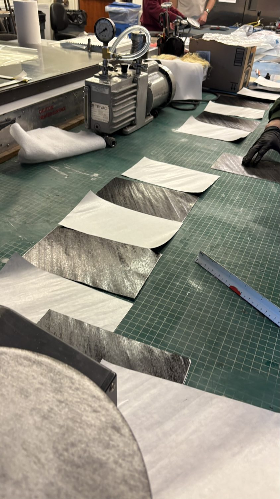
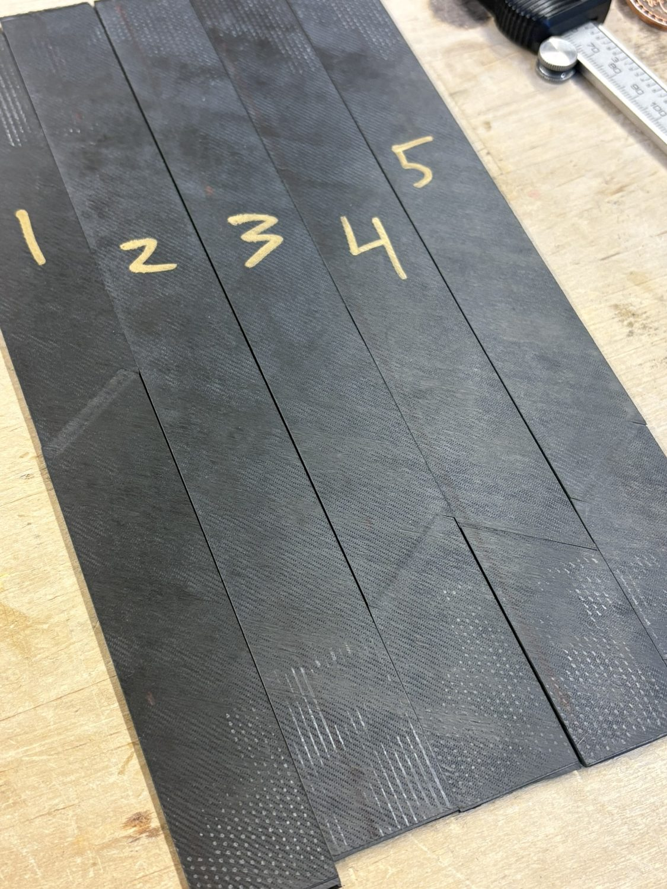
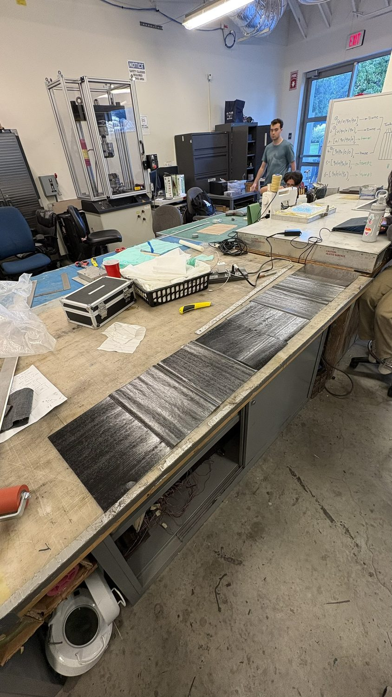

PROJECT 05 / 11 · Materials Testing
ASTM D3039 / D3518 Testing
Composite coupon fabrication and mechanical testing to ASTM standards — characterizing lamina properties and checking them against micromechanics theory.
StandardsASTM D3039 · D3518
MaterialToray TC250 pre-preg
LayupsUnidirectional & woven
RigInstron
AgreementWithin 2% of theory
Overview
To characterize the lamina I fabricated unidirectional and woven coupons from Toray TC250 infused pre-preg and tested them on an Instron. ASTM D3039 tension gave longitudinal and transverse strength and modulus; ASTM D3518 ±45° tension gave the in-plane shear response.
I compared the measured values against analytical micromechanics predictions, and the experimental mean strengths landed within 2% of theory — a strong check on both manufacturing quality and the analytical model.
Highlights
- D3039 tension and D3518 in-plane shear
- Unidirectional and woven Toray TC250 coupons
- Instron testing to failure
- Experiment matched micromechanics within 2%
Gallery — 06 frames





